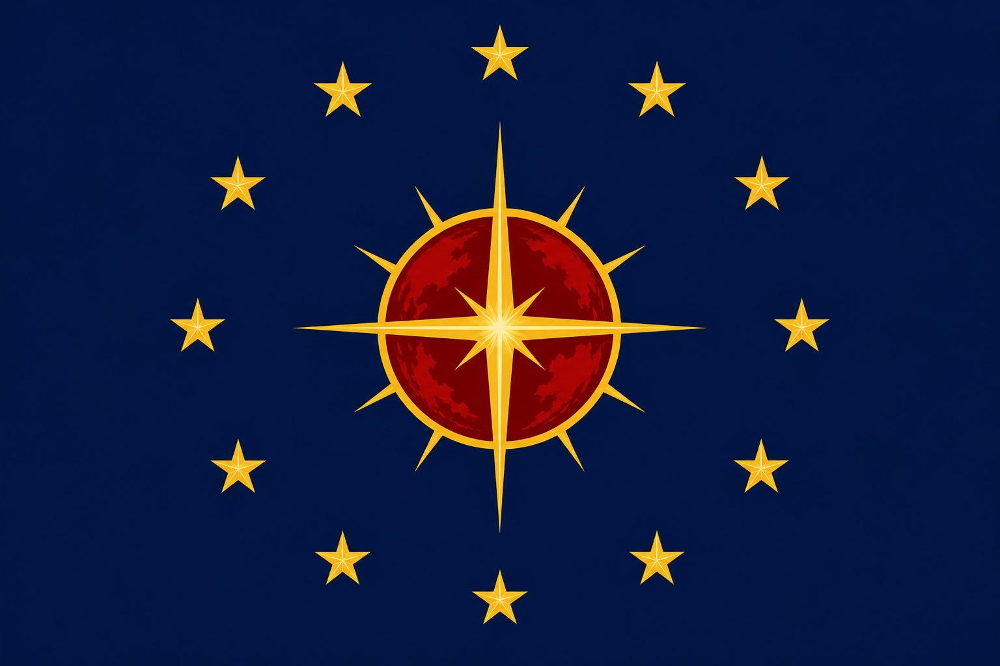

ДОСЬЕ № AИЯ-FRA-C-002
I. ОБЩИЕ СВЕДЕНИЯ

Республика ЭрисII. ВНЕШНИЙ ВИД
III. ЛИЧНОСТНЫЙ ПРОФИЛЬ
- Добрая, искренняя, эмпатичная
- Сильная эмоциональная привязанность к Канцлеру
- Склонность к заботе о близких
- Спокойная, уравновешенная
- Иногда неуверенная в себе
- Чувствительна к эмоциональному состоянию окружающих
- Стремится соответствовать ожиданиям старшей сестры
- Подсознательно ощущает разницу в статусе, но не дистанцируется
IV. КОМПЕТЕНЦИИ
- Коммуникация: высокий уровень.
- Социальные связи: высокий потенциал.
- Эмоциональный интеллект: высокий.
- Адаптация: высокий уровень.
- Аналитическое мышление: средний (развивающийся).
V. РОДСТВЕННИКИ
Реселия Рэй Кристалия (не родная старшая сестра)
Констанция Грейл воспринимает Канцлера как старшую сестру и единственного человека, с которым она может строить эмоционально близкие отношения вне формальной иерархии ФРА. Для Констанции Канцлер является опорой, источником вдохновения и ориентиром в личной и социальной жизни.
Связь с Канцлером носит исключительно личный и эмоциональный характер: Констанция проявляет заботу, внимание и поддержку, одновременно ощущая ответственность за сохранение эмоционального комфорта старшей сестры. Она осознаёт высокий статус Канцлера и формальную дистанцию, но для себя старается быть рядом, обеспечивая эмоциональную стабильность и поддержку.
Факт родства официально представлен как дальнее, что позволяет Констанции сохранять социальную репутацию и корректное положение в Республике Эрис. Реальная степень близости известна только ограниченному кругу доверенных лиц. Связь классифицируется как неформальный стабилизирующий фактор, без угрозы безопасности и вмешательства со стороны системы.